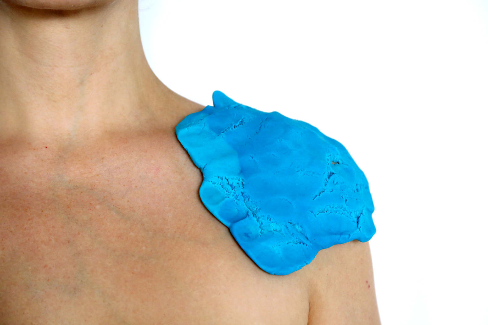
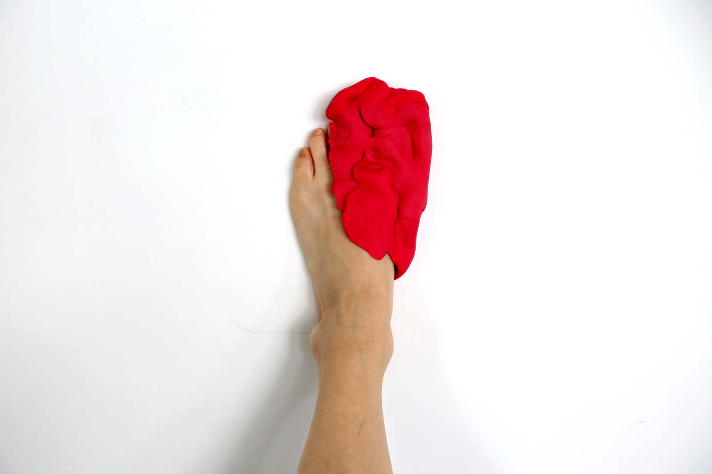
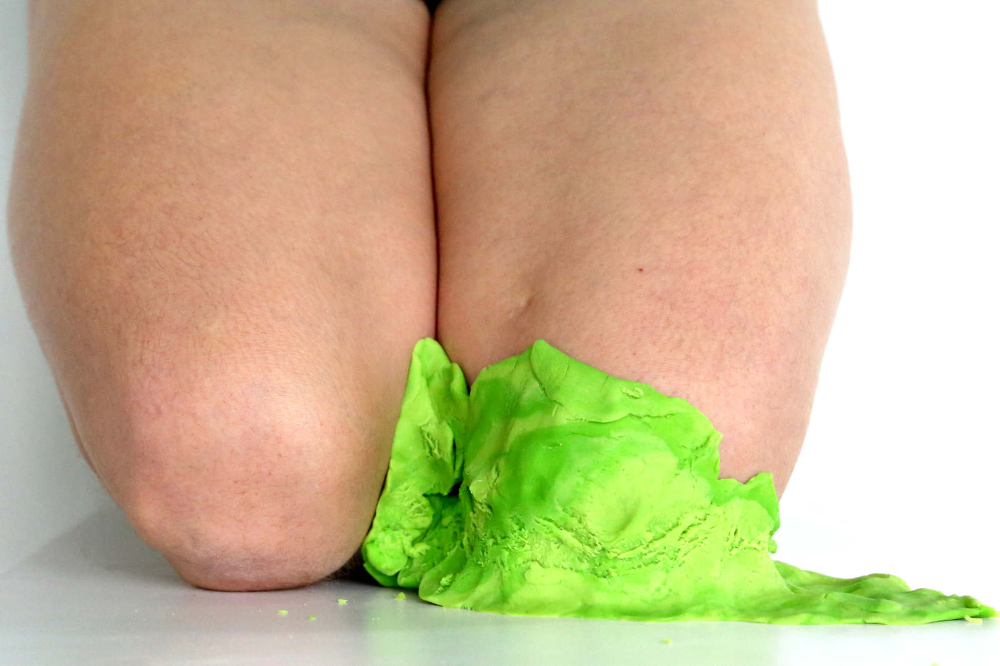
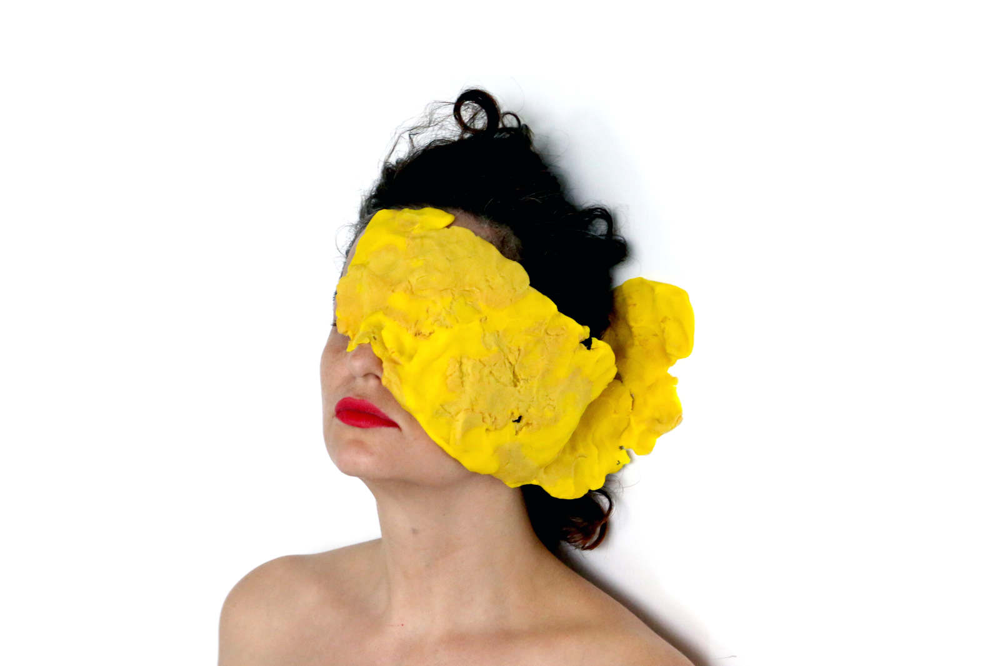
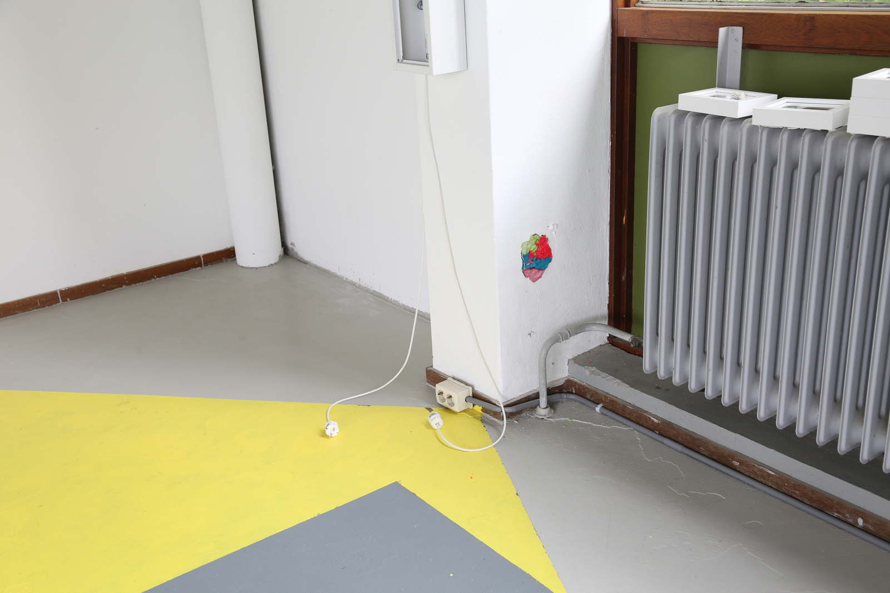
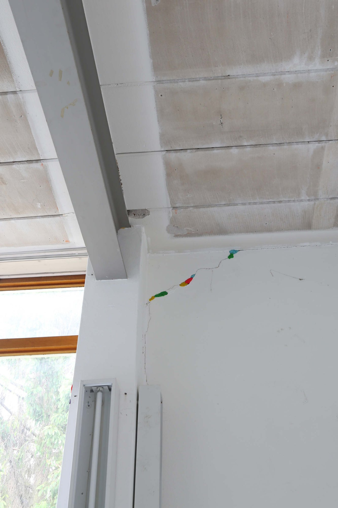
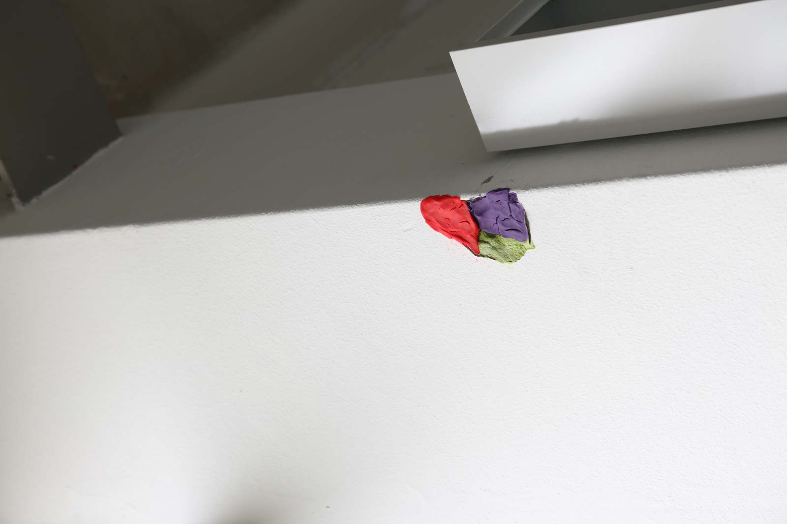
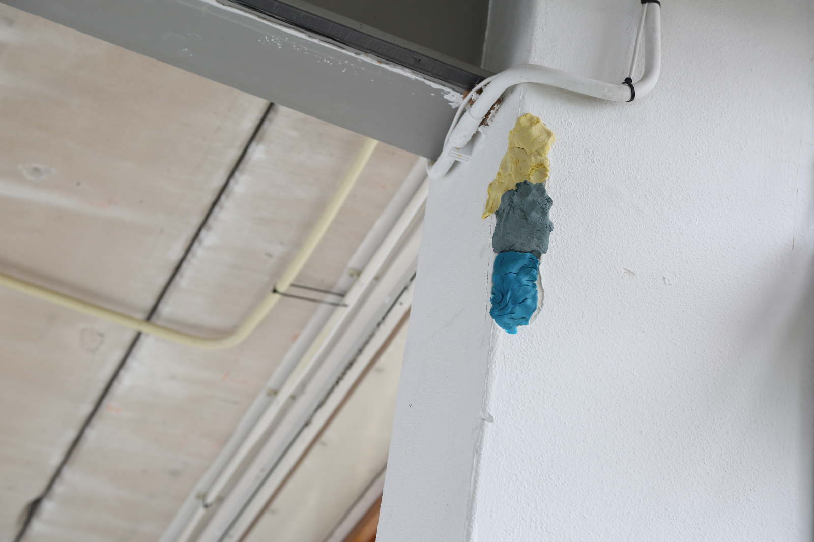

infiltration (or head, shoulder, knees & toes) infiltração (ou cabeça, ombro, joelho e pé)
infiltration (or head, shoulder, knees & toes)
infiltração (ou cabeça, ombro, joelho e pé)
2017
massinha e fotografia (play-doh and photography)
configuração de imagens com intervenção no espaço: eu cobri as rachaduras nas estruturas da galeria com massinha de modelar (configuration with images and space interventions: i covered the cracks in the gallery structures with play-doh)








2017. re: production. mothers in arts residency. amsterdam.